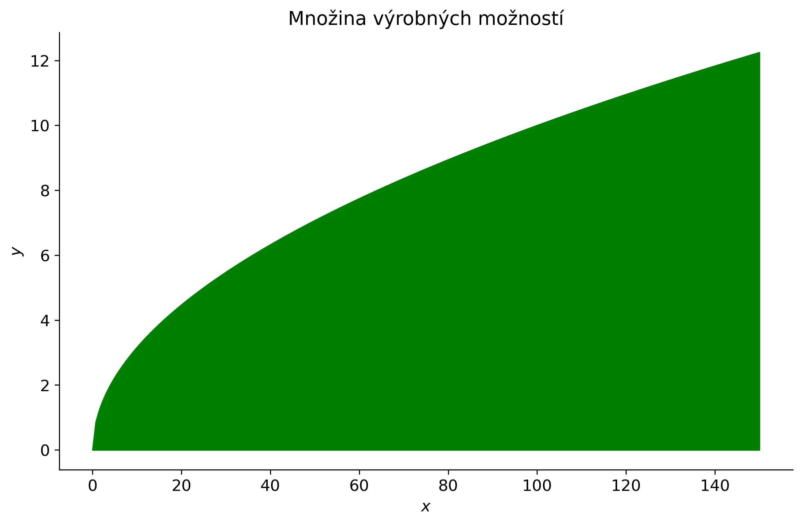
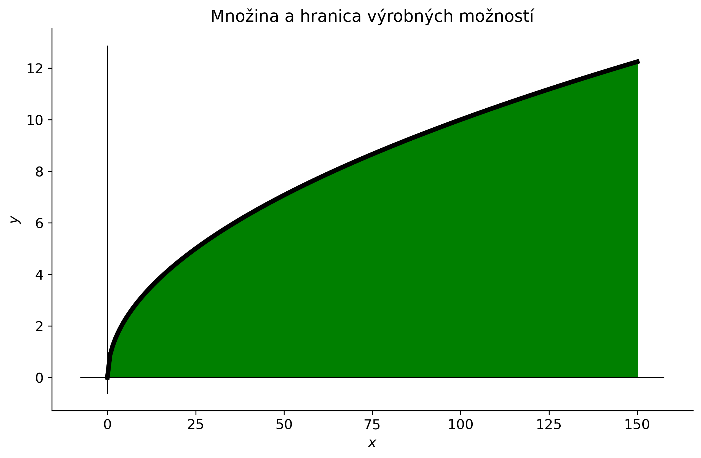
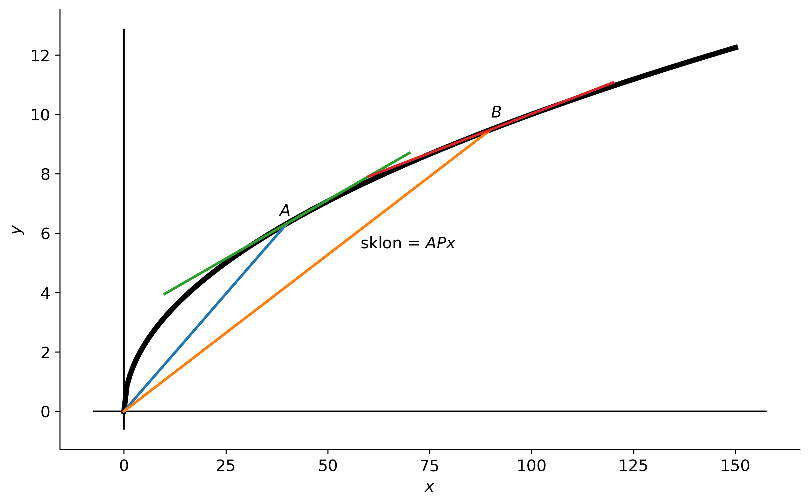
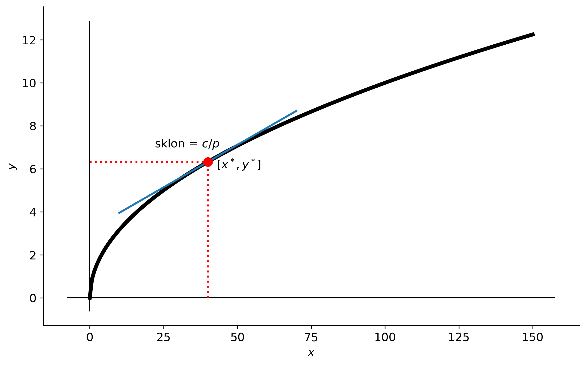
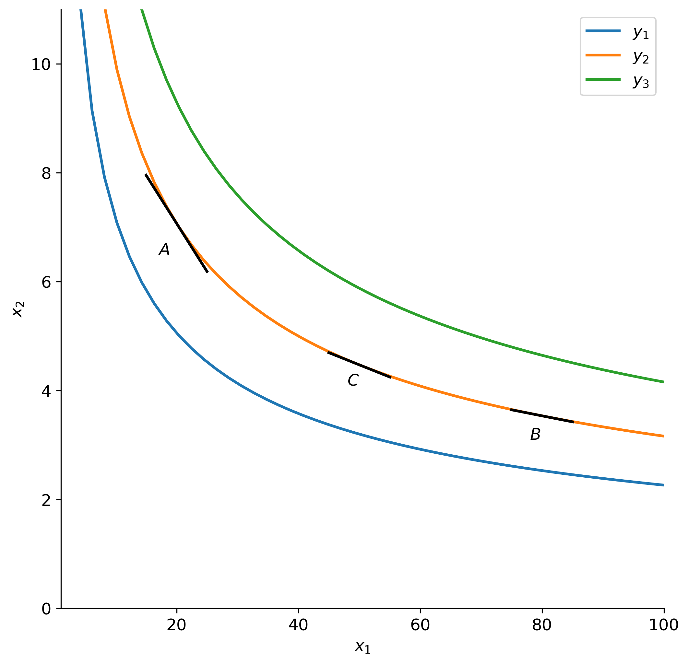
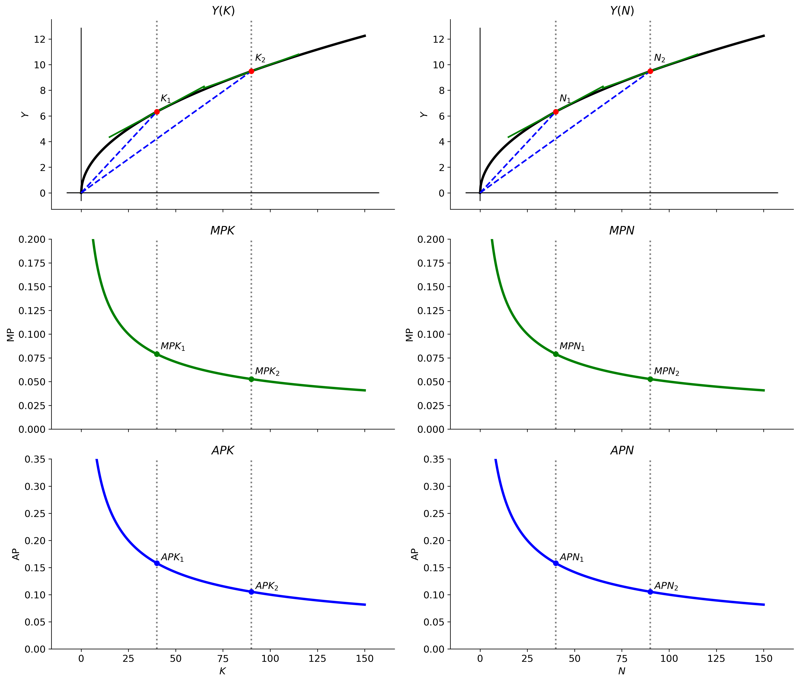
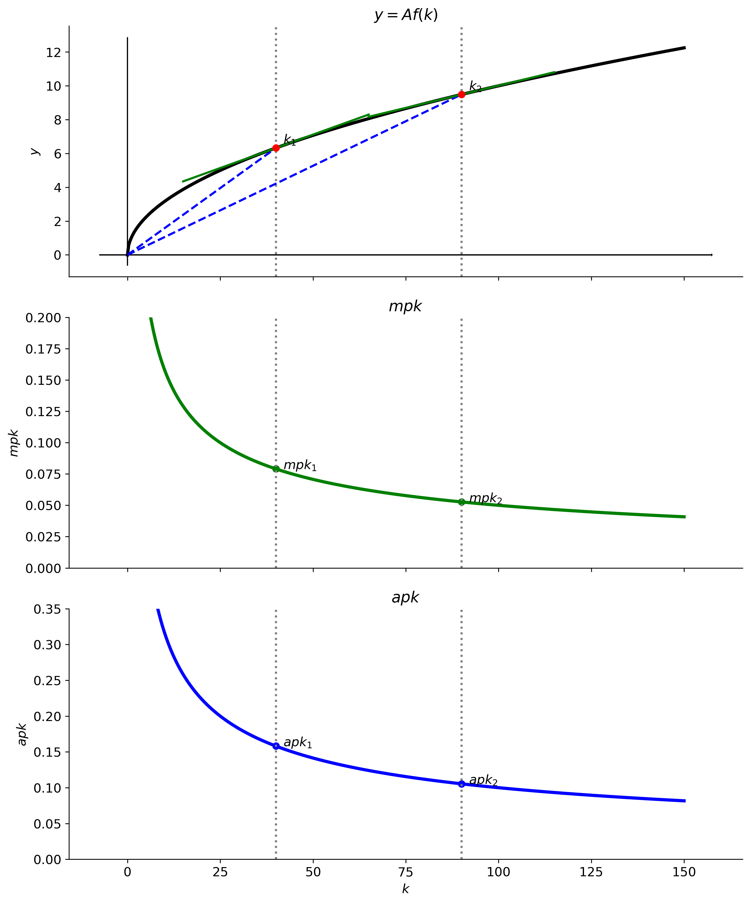
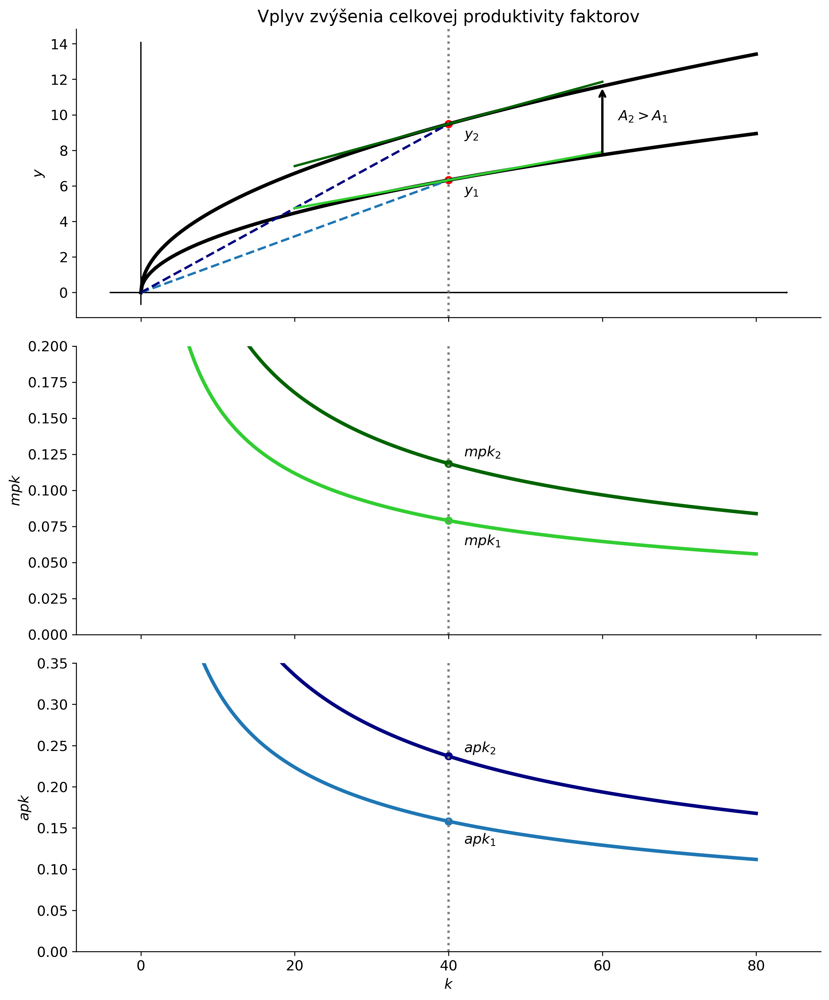
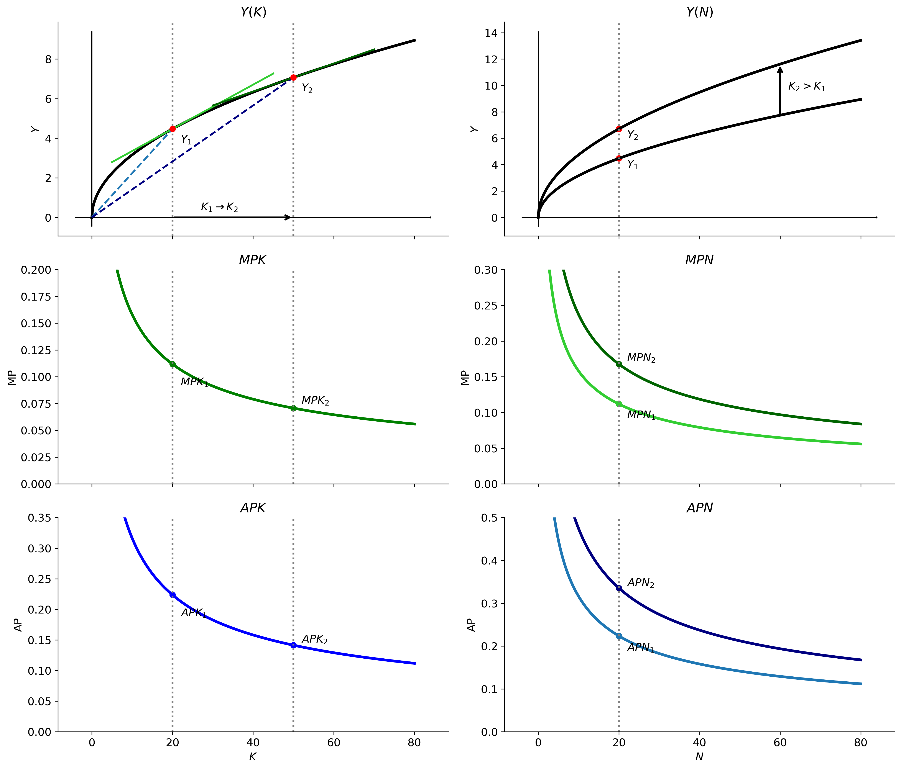
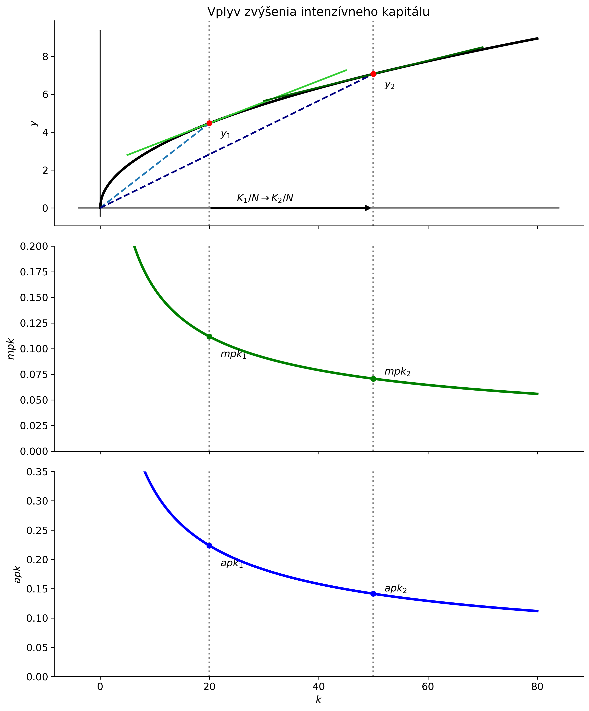

2. Produkcia firmy#
- Vstupy a výstupy
Firma spotrebúva statky a služby, ktoré vstupujú do výrobného procesu. Tieto veličiny nazývame vstupy. Výsledkom výrobného procesu sú výstupy.
Predpokladajme, že firma vyrába \(y \ge 0\) jednotiek finálneho výstupu. Na výrobu spotrebuje \(x \ge 0\) jednotiek vstupu.
2.1. Množina výrobných možností#
- Výrobné možnosti firmy
Výrobné možnosti firmy sú obmedzené. Pri danom množstve vstupu \(x\), firma môže vyrobiť iba obmedzené množstvo výstupu \(y\).
- Množina výrobných možností
Množina výrobných možností firmy je množina všetkých prípustných možností výroby firmy. Množina výrobných možností firmy je zobrazená na Obr. 2.1. Ak je množstvo vstupu aj výstupu nekonečne deliteľné, množina výrobných možností je nekonečná; každý bod v zelene vyznačenom priestore je prípustný, predstavuje výrobnú možnosť.

Obr. 2.1 Množina výrobných možností#
Zelená plocha na obrázku predstavuje množinu výrobných možností firmy. Každý bod v tejto oblasti predstavuje prípustnú kombináciu vstupu a výstupu.
Body nachádzajúce sa nad zelenou plochou nie sú technologicky uskutočniteľné. Firma ich nedokáže vyrobiť pri dostupnej technológii.
Body nachádzajúce sa vo vnútri množiny sú prípustné, ale firma pri nich nevyužíva svoj výrobný potenciál naplno.
Na Obr. 2.2 je z množiny výrobných možností zvýraznená možnosť \([100,5]\) červenou farbou. Táto výrobná možnosť nie je efektívna;
pri využití 100 jednotiek vstupu firma môže vyrobiť viac ako 5 jednotiek výstupu, maximálne 10 (bod zvýraznený žltou farbou);
na výrobu 5 jednotiek výstupu postačuje aj menšie množstvo vstupu; pri spotrebe 25 jednotiek vstupu dokáže firma stále vyrobiť 5 jednotiek výstupu (modrý bod).
Pre firmu nie je prípustná možnosť \([50,8]\) (fialový bod); tento bod nepatrí do množiny výrobných možností.
Obr. 2.2 Výrobné možnosti firmy#
Ktoré výrobné možnosti sú efektívne (Efektívne riešenie)?
2.2. Hranica výrobných možností#
Efektívne výrobné možnosti sú na hranici ich množiny, sú to výrobné možnosti, ktoré zodpovedajú maximálnej možnej výrobe pre danú hodnotu vstupu.
- Hranica výrobných možností
Hranica výrobných možností je množina efektívnych výrobných možností.
Výrobná možnosť je efektívna, ak pri danom množstve vstupu poskytuje maximálny možný výstup. Efektívne výrobné možnosti ležia na hranici množiny výrobných možností.
Ak hodnotíme výrobné možnosti podľa kritérií minimalizácie vstupu a maximalizácie výstupu, žiadna výrobná možnosť na hranici nie je dominovaná inou výrobnou možnosťou.
Na obr. Obr. 2.3 je hranica výrobných možností zobrazená čiernou čiarou. Ohraničuje množinu výrobných možností zhora a predstavuje efektívnu hranicu výroby firmy.

Obr. 2.3 Hranica výrobných možností#
2.3. Produkčná funkcia#
Racionálna firma sa usiluje vyrábať efektívne.
Zo všetkých prípustných výrobných možností uprednostňuje efektívne výrobné možnosti, ktoré ležia na hranici výrobných možností.
Pre analýzu správania racionálnej firmy nám preto postačuje poznať hranicu jej výrobných možností.
Bude užitočné, ak hranicu výrobných možností dokážeme zapísať matematickou funkciou Funkcia.
Táto funkcia sa nazýva produkčná funkcia.
- Produkčná funkcia
Produkčná funkcia vyjadruje maximálne množstvo výstupu, ktoré možno vyrobiť pri danom množstve vstupu.
Pre ďalšie účely predpokladajme, že produkčná funkcia \(f(x)\) je dvakrát diferencovateľná.
2.3.1. Príklady produkčných funkcií s jedným vstupom a jedným výstupom#
Príklady matematických tvarov produkčnej funkcie môžu byť:
Tvar produkčnej funkcie (2.3) je lineárny, (2.2) Cobbov-Douglasov. Parameter \(a\) v (2.3) je vstupný Multiplikátor výstupu, pretože udáva, koľko jednotiek výstupu pripadá na jednotku vstupu. Parameter \(\alpha\) v je vstupná Elasticita výstupu. Vyjadruje percentuálnu zmenu výstupu pri jednopercentnej zmene vstupu. Keďže možno predpokladať, že zvyšovaním vstupu produkcia výstupu rastie, predpokladáme \(A,a,\alpha>0\). Ak v produkčnej funkcii v Cobbovom-Douglasovom tvare (2.2) dosadíme za elasticitu \(\alpha = 1/2\), získame produkčnú funkciu v tvare (2.1).
Produkčná funkcia opisuje technologické obmedzenia firmy. Sama osebe nehovorí nič o tom, koľko firma skutočne vyrába. Skutočný objem výroby závisí aj od cien vstupov a výstupov.
- Hraničný produkt vstupu
Hraničný produkt vstupu je vstupný multiplikátor výstupu. Vyjadruje zmenu výstupu spôsobenú malou zmenou vstupu.
Hraničný produkt vstupu vyjadruje, ako sa zvýši výstup, ak sa vstup zvýši o jednotku, ceteris paribus.
Vo všeobecnosti možno predpokladať, že hraničný produkt vstupu je kladný; s rastom vstupu rastie výstup. Produkčná funkcia je preto rastúcou funkciou vstupu.
- Priemerný produkt vstupu
je podiel výstupu a vstupu,
Geometrická interpretácia priemerného a hraničného produktu je na Obr. 2.4.
Priemerný produkt vstupu zodpovedá sklonu úsečky, ktorá spája začiatok súradnicového systému s bodom produkčnej funkcie. V bode A je táto úsečka strmšia než v bode B, preto je priemerný produkt vstupu v bode A vyšší.
Hraničný produkt vstupu zodpovedá sklonu dotyčnice k produkčnej funkcii. Na obr. Obr. 2.4 sú hraničné produkty v bodoch A a B reprezentované dotyčnicami.

Obr. 2.4 Geometrická interpretácia hraničného a priemerného produktu vstupu.#
Ktorá výrobná možnosť je optimálna?
Nasledujúca úvaha je len predbežnou ilustráciou. Podrobnú analýzu optimálneho rozhodovania firmy vykonáme v nasledujúcej kapitole.
Z našich doterajších znalostí sa však dokážeme prepracovať k odpovedi (pozri tiež Príklad. Pýtame sa, ktorá z množiny efektívných výrobných možností je tá, pre ktorú sa rozhodne firma usilujúca o maximálny zisk.
Predpokladajme, že cena vstupu je \(c\) a cena výstupu je \(p\).
Ak firma zvýši vstup o jednotku, produkcia sa približne zvýši o \(MPx\) jednotiek výstupu. Hodnota tejto dodatočnej produkcie je \(p\,MPx\).
Racionálna firma zvyšuje vstup dovtedy, kým sa hodnota dodatočného výstupu rovná nákladom na dodatočnú jednotku vstupu:
Po vydelení cenou výstupu dostaneme
Na Obr. 2.5 optimálny výber firmy zodpovedá dotyčnice produkčnej funkcie so sklonom \(c/p\)

Obr. 2.5 Optimálny výber firmy maximalizujúcej zisk#
Formálne zapísané, firma rieši Úloha na voľný extrém v tvare:
kde zisk firmy počítame ako rozdiel medzi príjmom \(pf(x)\) a nákladmi \(cx\).
Poznámka
Presne vzaté, nejde o úlohu na voľný extrém, pretože rozhodovanie firmy je obmedzené podmienkou
Ak však optimálne riešenie leží vo vnútri prípustnej množiny (\(x>0\)), možno ho nájsť rovnakým postupom ako voľný extrém, teda pomocou podmienok prvého a druhého rádu.
V našom prípade predpokladáme riešenie vo vnútri prípustnej množiny, preto postačuje riešiť úlohu rovnakým spôsobom ako voľný extrém.
Podmienka prvého rádu je
Podmienka druhého rádu je konkávnosť produkčnej funkcie
ak predpokadáme, že cena výstupu je kladná \(p>0\).
Produkcia firmy |
Teória optimalizácie |
|---|---|
Množina výrobných možností |
Množina prípustných riešení |
Hranica výrobných možností (efektívna hranica) |
Množina efektívnych riešení |
Výrobná možnosť maximalizujúca zisk |
Optimálne riešenie |
Množina výrobných možností firmy zohráva v produkčnej teórii rovnakú úlohu ako Množina prípustných riešení v matematickej optimalizácii. Hranica výrobných možností predstavuje množinu efektívnych riešení (Efektívne riešenie) a firma maximalizujúca zisk z nej vyberá optimálne riešenie (Úloha na voľný extrém).
2.4. Produkčná funkcia s dvoma vstupmi#
Doteraz sme predpokladali, že firma využíva iba jeden vstup. V praxi však výroba spravidla vyžaduje viacero vstupov, napríklad prácu a kapitál.
Ak firma využíva dva vstupy, produkčnú funkciu zapisujeme v tvare
kde
\(x_1\) je prvý vstup,
\(x_2\) je druhý vstup,
\(y\) je výstup,
predpokladáme, že \(f(x_1,x_2)\) je dvakrát diferencovateľná.
Hraničné produkty vstupov sú
2.4.1. Vrstevnice produkčnej funkcie#
Produkčná funkcia s dvoma vstupmi je zobrazená v trojrozmernom priestore. Na jednoduchšiu analýzu sa často využíva jej vrstevnicové zobrazenie.
Vrstevnica produkčnej funkcie je množina všetkých kombinácií vstupov, ktoré vedú k rovnakej úrovni výstupu. Formálne ju definujeme rovnicou
kde \(\bar y\) je pevne daná úroveň produkcie.
2.4.2. Izokvanty#
Vrstevnice produkčnej funkcie sa v ekonómii nazývajú izokvanty.
- Izokvanta
Izokvanta je množina kombinácií vstupov, ktoré umožňujú vyrobiť rovnaké množstvo výstupu.
Pri pohybe po izokvante zostáva výstup nezmenený. Zvýšenie jedného vstupu preto musí byť kompenzované znížením druhého vstupu.
2.4.3. Hraničná miera technickej substitúcie#
Sklon izokvanty vyjadruje, v akom pomere možno nahrádzať jeden vstup druhým bez zmeny objemu produkcie.
- Hraničná miera technickej substitúcie
Hraničná miera technickej substitúcie je hraničná miera substitúcie Hraničná miera substitúcie aplikovaná na produkčnú funkciu.
Na Obr. 2.6 sú zobrazené izokvanty produkčnej funkcie. Hraničnú mieru technickej substitúcie vyjadruje sklon dotyčnice. V bode \(B\) je hraničná miera technickej substitúcie relatívne nízka, v bode \(A\) vysoká.
Hraničná miera technickej substitúcie vyjadruje, o koľko jednotiek vstupu \(x_2\) možno znížiť jej spotrebu pri zvýšení vstupu \(x_1\) o jednotku tak, aby sa produkcia nezmenila.
Podobne ako pri hraničnej miere substitúcie ju vyjadríme ako podiel prvých derivácií produkčnej funkcie
Hraničná miera technickej substitúcie je teda podielom hraničných produktov oboch vstupov.

Obr. 2.6 Izokvanty a hraničná miera tachnickej transformácie#
2.5. Produkčná funkcia s viac vstupmi#
Firma môže na výrobu potrebovať viac vstupov.
Produkčná funkcia s \(n\) vstupmi je v tvare:
Hodnoty vstupov možno zapísať vektorom:
Potom možno produkčnú funkciu s viac vstupmi zapísať v tvare:
Nech produkčná funkcia \(f(\mathbf{x})\) je dvakrát diferencovateľná. Hraničný produkt vstupu \(i\) je:
Priemerný produkt vstupu \(i\) je:
Hraničná miera technickej substitúcie medzi vstupmi \(i\) a \(j\) je
Produkčná funkcia s jedným vstupom je špeciálnym prípadom produkčnej funkcie s viacerými vstupmi, keď \(n=1\).
Poznámka
Produkčná funkcia s jedným alebo dvoma vstupmi sa používa najmä na ilustráciu základných ekonomických princípov. Reálne firmy spravidla využívajú veľký počet vstupov a často produkujú viac výstupov súčasne.
Vo všeobecnosti výrobu firmy opisuje vektorová funkcia
2.6. Vlastnosti produkčnej funkcie#
Nech produkčná funkcia \(f(\mathbf{x})\) je dvakrát diferencovateľná. Potom môžeme uviesť nasledovné vlastnosti produkčnej funkcie.
2.6.1. Rastúcosť produkčnej funkcie#
- Rastúcosť produkčnej funkcie
Produkčná funkcia je rastúca v každom vstupe.
Ak sa zvýši množstvo niektorého vstupu a ostatné vstupy zostanú nezmenené, produkcia sa nezníži.
Rastúcosť vyjadruje predpoklad, že väčšie množstvo vstupov umožňuje vyrobiť aspoň rovnaké množstvo výstupu.
2.6.2. Hraničné produkty vstupov#
Hraničný produkt vstupu vyjadruje prírastok produkcie spôsobený zvýšením vstupu.
Priebeh hraničného produktu závisí od druhej derivácie produkčnej funkcie.
Ak platí
produkčná funkcia je vo vstupe \(x_i\) konkávna. Hraničný produkt vstupu je potom klesajúci vo vstupe \(x_i\).
Ak platí
produkčná funkcia je vo vstupe \(x_i\) konvexná. Hraničný produkt vstupu je potom rastúci vo vstupe \(x_i\).
Druhá derivácia |
Tvar produkčnej funkcie vo vstupe \(x_i\) |
Hraničný produkt vstupu |
|---|---|---|
\(\frac{\partial^2 f}{\partial x_i^2}<0\) |
konkávna |
klesajúci vo vstupe \(x_i\) |
\(\frac{\partial^2 f}{\partial x_i^2}=0\) |
lineárna |
konštantný |
\(\frac{\partial^2 f}{\partial x_i^2}>0\) |
konvexná |
rastúci vo vstupe \(x_i\) |
Sklon izokvanty je určený hraničnou mierou technickej substitúcie (2.5)
Priebeh hraničných produktov preto ovplyvňuje tvar izokvánt.
Ak hraničné produkty vstupov klesajú, spravidla klesá aj hraničná miera technickej substitúcie. Izokvanty sú potom konvexné voči počiatku súradnicového systému. Obr. 2.6 zobrazuje konvexné izokvanty.
2.6.3. Výnosy z rozsahu#
- Výnosy z rozsahu
Výnosy z rozsahu vyjadrujú, ako sa zmení výstup pri rovnomernom zvýšení všetkých vstupov.
Nech sa všetky vstupy zvýšia \(t\)-násobne. Potom porovnávame pôvodný výstup
a nový výstup
2.6.3.1. Konštantné výnosy z rozsahu#
Ak platí
produkčná funkcia má konštantné výnosy z rozsahu.
2.6.3.2. Rastúce výnosy z rozsahu#
Ak platí
produkčná funkcia má rastúce výnosy z rozsahu.
2.6.3.3. Klesajúce výnosy z rozsahu#
Ak platí
produkčná funkcia má klesajúce výnosy z rozsahu.
Výnosy z rozsahu možno interpretovať aj pomocou elasticity výstupu vzhľadom na súčasnú zmenu všetkých vstupov.
Predpokladajme, že všetky vstupy zvýšime o 1 %. Potom
Nové množstvo vstupov je
Výnosy z rozsahu porovnávajú, o koľko percent sa zvýši výstup v reakcii na toto jednopercentné zvýšenie všetkých vstupov.
Ak sa výstup zvýši o viac než 1 %, produkčná funkcia má rastúce výnosy z rozsahu.
Ak sa výstup zvýši presne o 1 %, produkčná funkcia má konštantné výnosy z rozsahu.
Ak sa výstup zvýši o menej než 1 %, produkčná funkcia má klesajúce výnosy z rozsahu.
Elasticita výstupu vzhľadom na súčasnú proporcionálnu zmenu všetkých vstupov je rovná súčtu všetkých vstupných elasticít výstupu
Preto:
ak
výstup rastie rýchlejšie než všetky vstupy a produkčná funkcia má rastúce výnosy z rozsahu,
ak
výstup rastie rovnakým tempom ako všetky vstupy a produkčná funkcia má konštantné výnosy z rozsahu,
ak
výstup rastie pomalšie než všetky vstupy a produkčná funkcia má klesajúce výnosy z rozsahu.
Súčet elasticít výstupu podľa všetkých vstupov možno interpretovať ako elasticitu výstupu podľa rozsahu výroby.
Výnosy z rozsahu |
Produkčná funkcia |
Súčet vstupných elasticít výstupu |
|---|---|---|
Rastúce |
\(f(t\mathbf{x}) > t f(\mathbf{x})\) |
\(\sum_i \varepsilon_i > 1\) |
Konštantné |
\(f(t\mathbf{x}) = t f(\mathbf{x})\) |
\(\sum_i \varepsilon_i = 1\) |
Klesajúce |
\(f(t\mathbf{x}) < t f(\mathbf{x})\) |
\(\sum_i \varepsilon_i < 1\) |
2.7. Makroekonomické vlastnosti produkčnej funkcie#
Predpokladáme, že technológia je verejne dostupná pre všetky firmy. Agregovanú (makroekonomickú) produkciu ekonomiky preto môžeme aproximovať jedinou produkčnou funkciou.
V makroekonómii sa najčastejšie predpokladá, že výstup ekonomiky závisí od kapitálu, práce a technológie.
Makroekonomická produkčná funkcia má tvar
kde
\(Y \ge 0\) je výstup ekonomiky,
\(K \ge 0\) je zásoba kapitálu,
\(N \ge 0\) je množstvo práce,
\(A > 0\) je celková produktivita faktorov.
Zásoba kapitálu a práca sú vstupy. Zásoba kapitálu je kumulované množstvo všetkých budov, strojov a zariadení používaných vo výrobe.
Práca môže byť vyjadrená množstvom pracujúcich (z dlhodobého hľadiska) alebo úhrnným odpracovaným časom (z krátkodobého hľadiska).
Celková produktivita faktorov vyjadruje efekt využitia vstupov vo výrobe. Čím je vyššia, tým lepšie sa vstupy využívajú.
Makroekonomická produkčná funkcia má tieto vlastnosti:
je rastúca vo vstupoch kapitál a práca,
je konkávna,
elasticita výstupu podľa celkovej produktivity faktorov sa rovná 1,
prechádza začiatkom súradnicového systému,
má konštantné výnosy z rozsahu.
Predpokladajme, že produkčná funkcia je dvakrát diferencovateľná.
Vlastnosť |
Matematické vyjadrenie |
|---|---|
Rastúcosť |
\(MPK \ge 0,\ MPN \ge 0\) |
Konkávnosť |
\(\frac{\partial^2Y}{\partial K^2}\le0,\ \frac{\partial^2Y}{\partial N^2}\le0\) |
Elasticita podľa \(A\) |
\(\varepsilon_A = 1\) |
Začiatok súradnicového systému |
\(F(0,0)=F(K,0)=F(0,N)=0\) |
Konštantné výnosy z rozsahu |
\(F(tK,tN)=tF(K,N)\) |
2.7.1. Rastúca produkčná funkcia#
Produkcia rastie so zvyšovaním kapitálu aj práce:
Hraničné produkty vstupov sú:
- Hraničný produkt kapitálu
kapitálový Multiplikátor výstupu.
- Hraničný produkt práce
pracovný Multiplikátor výstupu.
2.7.2. Konkávnosť#
Produkčná funkcia je konkávna vo vstupoch kapitál a práca.
Hraničné produkty kapitálu a práce sú preto klesajúce vo vlastných vstupoch.
2.7.3. Celková produktivita faktorov#
Elasticita výstupu podľa celkovej produktivity faktorov sa rovná 1:
Keďže
platí
Preto
Zvýšenie celkovej produktivity faktorov o 1 % vedie k zvýšeniu výstupu o 1 %. Preto sa z dlhodobého hľadiska parameter \(A\) interpretuje ako technologická úroveň ekonomiky.
2.7.4. Začiatok súradnicového systému#
Ak ekonomika nedisponuje kapitálom alebo prácou, predpokladáme nulovú produkciu:
Preto
2.7.5. Konštantné výnosy z rozsahu#
Ak sa kapitál aj práca zvýšia rovnakým násobkom \(t\), výstup sa zvýši v rovnakom pomere:
Makroekonomická produkčná funkcia má preto konštantné výnosy z rozsahu.
Konštantné výnosy z rozsahu znamenajú, že zvýšenie kapitálu aj práce o 1 % vedie k zvýšeniu výstupu o 1 %.
Pri konštantných výnosoch z rozsahu platí, že súčet elasticít výstupu podľa kapitálu a práce je rovný jednej:
2.7.6. Dôsledky makroekonomických vlastností produkčnej funkcie#
Dôsledky niektorých vlastností makroekonomickej produkčnej funkcie možno interpretovať z Obr. 2.7.
V hornom paneli sklony dotyčníc predstavujú hraničné produkty v dvoch rôznych bodoch. Sklony priamok prachádzajúcich začiatkom súradnicovej sústavy a daným bodom predstavujú priemerné produkty.
Z rastúcosti produkčnej funkcie vyplýva kladný hraničný produkt kapitálu a práce.
Z konkávnosti produkčnej funkcie vyplývajú klesajúce hraničné produkty vstupov.
Priemerné produkty majú podobný priebeh ako hraničné produkty a pri rastúcej konkávnej produkčnej funkcii sú tiež klesajúcimi funkciami vstupov.

Obr. 2.7 Geometrická interpretácia makroekonomickej produkčnej funkcie#
2.8. Dekompozícia rastu#
Ako sa celková produktivita faktorov {A} a vstupy kapitál {K} a práca {N} podieľajú na raste?
Najskôr potrebujeme zapísať rast výstupu. Rast ekonomických premenných meriame relatívne v %. Za predpokladu diferencovateľnosti produkčnej funkcie (2.6), relatívny rast výstupu je \(dY/Y\).
Analogicky relatívny rast celkovej produktivity faktorov zapíšeme ako \(dA/A\), kapitálu \(dK/K\) a práce \(dN/N\).
Ak v (2.6) rastie \(Y\), možno to pripísať rastu \(A\), \(N\) alebo \(K\).
Percentuálny rast jednej premennej spôsobený rastom inej premennej je Elasticita.
Elasticita výstupu vzhľadom na celkovú produktivitu faktorv (2.7) sa rovná 1. Označme kapitálovú elasticitu výstupu symbolom \(\alpha\) a pracovnú symbolom \(\beta\). Platí:
Potom produkčnú funkciu (2.6) možno zapíasať v tvare
Rast výstupu možno preto rozložiť na príspevok celkovej produktivity faktorov, kapitálu a práce.
2.8.1. Vstupné elasticity výstupu a konštantné výnosy z rozsahu#
Predpoklad Konštantné výnosy z rozsahu v (2.6) sa spĺňa, ak (2.9), teda:
Ak predpokladáme konštantné výnosy z rozsahu, stačí nám poznať kapitálová elasticita výstupu, keďže pracovnú elasticitu výstupu možno vypočítať z (2.13):
2.8.2. Ekonomická interpretácia vstupných elasticít výstupu#
Vstupné elasticity výstupu (2.10) (2.11) možno zapísať tiež v tvare:
V (2.15) hraničný produkt kapitálu \(MPK\) vyjadruje objem výstupu zodpovedajúci jednotke kapitálu. Ak ho vynásobíme objemom kapitálu, získame celkový výstup vyprodukovaný kapitálom. Podelením celkovým objemom výstupu dostaneme podiel kapitálu na výstupe.
- Podiel kapitálu na výstupe
je kapitálová elasticita výstupu \(\alpha\).
Analogicky
- Podiel práce na výstupe
je pracovná elasticita výstupu \(\beta\).
Ak hovoríme o agregovanom hospodárstve, jeho výstup možno vyjadriť hrubým domácim produktom. Potom tiež hovoríme o podieloch vstupov na hrubom domácom produkte.
Ak výnosy z rozsahu sú konštantné, súčet podielov vstupov na výstupe sa rovná 1 (2.13).
Do (2.13) dosaďme podiely za elasticity (2.15) a (2.16):
Vynásobením výstupm \(Y\), získame, ako výstup možno rozložiť na kapitálový a pracovný príspevok:
(2.17) je špeciálnym prípadom Eulerovej vety pre homogénne funkcie prvého stupňa. Produkčná funkcia s konštantnými výnosmi z rozsahu rozdeľuje celý výstup medzi výrobné faktory kapitál a prácu.
2.9. Intenzívny tvar produkčnej funkcie#
Konštantné výnosy z rozsahu umožňujú previesť makroekonomickú produkčnú funkciu na jednotku pracujúce (na pracujúceho, na odpracovanú hodinu).
Pripomeňme, že pri produkčnej funkcii (2.6) z makroekonomického hľadiska predpokladáme konštantné výnosy z rozsahu (2.8).
Do rovnice (2.8) dosadíme
Potom
Po dosadení do produkčnej funkcie získame
Po vydelení prácou
Definujme intenzívny kapitál a intenzívny výstup.
- Intenzívny kapitál
Kapitál na jednotku práce,
- Intenzívny výstup
Výstup na jednotku práce,
Potom produkčnú funkciu môžeme zapísať v intenzívnom tvare
- Produkčná funkcia v intenzívnom tvare
Produkčná funkcia v intenzívnome tvare vyjadruje vzťah medzi intenzívnym výstupom a intenzívnym kapitálom.
Výhodou intenzívneho tvaru je, že produkčnú funkciu dvoch vstupov možno analyzovať pomocou funkcie jednej premennej.
V nasledujúcom texte preukážeme, že:
produkčná funkcia prechádza začiatkom súradnicového systému,
intenzívny a extenzívny hraničný produkt kapitálu sa rovnajú
intenzívny a extenzívny priemerný produkt kapitálu sa rovnajú
elasticita výstupu podľa celkovej produktivity faktorov sa rovná 1.
Z uvedeného možno odvodiť vlastnosti produkčnej funkcie v intenzívnom tvare
2.9.1. Produkčná funkcia v intenzívom tvare prechádza začiatkom súradnicového systému#
Extenzívny tvar produkčnej funkcie prechádza začiatkom súradnícového systému. ukážeme, že rovnaké musí platiť pre intenzívny tvar.
Ak
potom
Z definície
a
dostávame
Intenzívnay tvar produkčnej funkcie preto prechádza začiatkom súradnicového systému.
2.9.2. Hraničné a priemerné produkty v intenzívnom tvare#
Hraničný produkt intenzívneho kapitálu je
Keďže
a produkčná funkcia má konštantné výnosy z rozsahu, platí
Hraničný produkt kapitálu je teda rovnaký v extenzívnom aj intenzívnom tvare produkčnej funkcie.
Priemerný produkt intenzívneho kapitálu je
Po dosadení definícií intenzívneho výstupu a intenzívneho kapitálu dostávame
Priemerný produkt kapitálu je preto tiež rovnaký v agregovanom aj intenzívnom tvare produkčnej funkcie.
Z rovností
vyplýva, že produkčná funkcia v intenzívnom tvare má rovnaké niektoré vlastnosti extenzívnej produkčnej funkcie.
Keďže agregovaná produkčná funkcia je rastúca a konkávna vo vstupe kapitál, rovnaké vlastnosti má aj produkčná funkcia v intenzívnom tvare. Jej hraničný produkt kapitálu je kladný a klesajúci vo vstupe kapitál.
2.9.3. Elasticita výstupu podľa celkovej produktivity faktorov v intenzívnoom tvare produkčnej funkcie#
Podobne ako extenzívny tvar produkčnej funkcie, aj produkčná funkcia v intenzívnom tvare má jednotkovú elasticitu výstupu podľa celkovej produktivity faktorov.
Keďže
platí
Zvýšenie celkovej produktivity faktorov o 1 % preto vedie k zvýšeniu intenzívneho výstupu o 1 %.
2.9.3.1. Vlastnosti produkčnej funkcie v intenzívnom tvare#
Produkčná funkcia v intenzívnom tvare
má tieto vlastnosti:
je rastúca vo vstupe intenzívny kapitál,
je konkávna,
prechádza začiatkom súradnicového systému,
elasticita výstupu podľa celkovej produktivity faktorov sa rovná 1.
2.9.3.2. Intenzívna produkčná funkcia je rastúca#
2.9.3.3. Konkávnosť#
2.9.3.4. Začiatok súradnicového systému#
Ak
potom
2.9.3.5. Elasticita podľa celkovej produktivity faktorov#
Zvýšenie celkovej produktivity faktorov o 1 % vedie k zvýšeniu intenzívneho výstupu o 1 %.
Intenzívny tvar produkčnej funkcie spolu s hraničným a priemerným produktom sú zobrazené na Obr. 2.8

Obr. 2.8 Intenzívny tvar produkčnej funkcie, hraničného a priemerného produktu kapitálu.#
2.10. Vplyv zvýšenia celkovej produktivity faktorov na produkčnú funkciu#
Predpokladajme, že sa zvýši celková produktivita faktorov z \(A_1\) na \(A_2\), pričom
Produkčná funkcia sa posunie nahor:
Pri každej úrovni kapitálu a práce ekonomika vyrobí viac výstupu.
Keďže celková produktivita faktorov vstupuje do produkčnej funkcie ako multiplikátor, zvýšenie \(A\) vedie nielen k zvýšeniu výstupu, ale aj hraničných a priemerných produktov vstupov.
Zvýšením celkovej produktivity faktorov sa preto zvyšujú:
výstup \(Y\),
intenzívny výstup \(y\),
hraničný produkt kapitálu \(MPK\) a \(mpk\),
hraničný produkt práce \(MPN\),
priemerný produkt kapitálu \(APK\) a \(apk\),
priemerný produkt práce \(APN\).
Grafická interpretácia zvýšenia celkovej produktivity faktorov je na Obr. 2.9 a Obr. 2.10.

Obr. 2.9 Vplyv zvýšenia celkovej produktivity faktorov na extenzívny výstup a produkty vstupov#
Pri vyššom \(A\) je vyšší \(Y\).
Pri vyššom \(A\) je produkčná funkcia a priamka spájajúca začiatok súradnicového systému s ľubovoľným bodom strmšia. Preto sú vyššie hraničný aj priemerný produkt vstupov.
Obr. 2.10 Vplyv zvýšenia celkovej produktivity faktorov na intenzívny výstup a produkty kapitálu#
Pri vyššom \(A\) je vyšší \(y\).
Pri vyššom \(A\) je produkčná funkcia a priamka spájajúca začiatok súradnicového systému s bodom strmšia. Preto sú vyššie hraničný aj priemerný produkt kapitálu.
2.11. Vplyv zvýšenia kapitálu na produkčnú funkciu#
Predpokladajme, že sa zásoba kapitálu zvýši z \(K_1\) na \(K_2\), pričom
V dôsledku rastúcej produkčnej funkcie sa výstup zvýši.
Keďže produkčná funkcia je konkávna, hraničný produkt kapitálu je klesajúci. Pri vyššej zásobe kapitálu preto platí
Rovnaký záver platí aj pre priemerný produkt kapitálu:
Naopak, kapitál zvyšuje produktivitu práce. Zvýšením kapitálu sa preto zvyšujú
Zvýšenie kapitálu teda pôsobí na produkty výrobných faktorov opačným spôsobom:
znižuje hraničný a priemerný produkt kapitálu,
zvyšuje hraničný a priemerný produkt práce.
Grafická interpretácia zvýšenia kapitálu je na Obr. 2.11 a Obr. 2.12.

Obr. 2.11 Vplyv zvýšenia kapitálu na výstup a produkty vstupov#

Obr. 2.12 Vplyv zvýšenia kapitálu na intenzívny výstup a produkty kapitálu#
2.12. Riešené príklady#
Nasledujúce príklady využívajú balík SymPy určený na algebraické úpravy, derivovanie a riešenie rovníc vo všeobecnom tvare.
from sympy import symbols, diff, solve, simplify, ask, Q
2.12.1. Príklad: Produkčná funkcia s jedným vstupom a optimálna produkcia#
Firma vyrába podľa produkčnej funkcie
Preukážte, že produkčná funkcia je rastúca a konkávna.
Ak je cena produkcie
a cena vstupu
vypočítajte optimálnu spotrebu vstupu a optimálnu produkciu firmy.
2.12.1.1. Riešenie#
Najskôr vyjadríme prvú deriváciu produkčnej funkcie
Platí
Keďže
pre všetky
produkčná funkcia je rastúca.
Vyjadríme druhú deriváciu
Keďže
pre všetky
produkčná funkcia je konkávna.
Zisk firmy je
Po dosadení dostaneme
Podmienka prvého rádu je
Po úprave dostaneme
Odtiaľ
a teda
Optimálna produkcia je
Optimálna spotreba vstupu je
a optimálna produkcia je
2.12.1.2. Python#
Prvú a druhú deriváciu môžeme vypočítať aj pomocou balíka SymPy.
x = symbols("x", positive=True)
f = x**(1/2)
print("Prvá derivácia:")
print(diff(f, x))
print()
print("Je prvá derivácia nezáporná?")
print(ask(Q.nonnegative(diff(f, x))))
print()
print("Druhá derivácia:")
print(diff(f, x, 2))
print()
print("Je druhá derivácia nekladná?")
print(ask(Q.nonpositive(diff(f, x, 2))))
Prvá derivácia:
0.5/x**0.5
Je prvá derivácia nezáporná?
True
Druhá derivácia:
-0.25/x**1.5
Je druhá derivácia nekladná?
True
Optimálnu spotrebu vstupu a produkciu vypočítame nasledovne.
x = symbols("x", nonnegative=True)
p = 10
c = 1
zisk = p*x**(1/2) - c*x
podmienka = diff(zisk, x)
x_riesenie = solve(podmienka, x, dict=True)
x_riesenie = x_riesenie[0] if type(x_riesenie) is list else x_riesenie
x_opt = x_riesenie[x]
y_opt = simplify(x_opt**(1/2))
print("Optimálna spotreba vstupu =", x_opt)
print("Optimálna produkcia =", y_opt)
Optimálna spotreba vstupu = 25.0000000000000
Optimálna produkcia = 5.00000000000000
2.12.2. Príklad: Produkčná funkcia s dvoma vstupmi#
Firma vyrába podľa produkčnej funkcie
Preukážte, že produkčná funkcia je rastúca vo vstupoch \(x_1\) a \(x_2\).
Preukážte, že produkčná funkcia je konkávna vo vstupoch \(x_1\) a \(x_2\).
Odvoďte izokvantu produkčnej funkcie.
Preukážte, že izokvanta je klesajúca a konvexná.
Vyjadrite a interpretujte hraničnú mieru technickej substitúcie.
2.12.2.1. Riešenie#
Parciálne derivácie produkčnej funkcie sú
a
Keďže sú obidve parciálne derivácie kladné pre všetky prípustné hodnoty vstupov, produkčná funkcia je rastúca vo vstupoch \(x_1\) aj \(x_2\).
Druhé parciálne derivácie sú
a
Keďže sú záporné pre všetky prípustné hodnoty vstupov, produkčná funkcia vykazuje klesajúce hraničné produkty vstupov.
Vrstevnicu produkčnej funkcie získame z podmienky
Po umocnení na tretiu dostaneme
Po vyjadrení vstupu \(x_2\)
To je rovnica vrstevnice produkčnej funkcie.
Prvá derivácia vrstevnice je
Keďže je záporná, vrstevnica je klesajúca.
Druhá derivácia vrstevnice je
Keďže je kladná, vrstevnica je konvexná.
Hraničná miera technickej substitúcie je
Po dosadení
Po úprave dostaneme
Hraničná miera technickej substitúcie vyjadruje množstvo vstupu \(x_2\), ktoré možno ušetriť pri zvýšení vstupu \(x_1\) o jednotku tak, aby produkcia zostala nezmenená.
Keďže
jej hodnota klesá s rastom vstupu \(x_1\). Produkčná funkcia preto vykazuje klesajúcu hraničnú mieru technickej substitúcie.
2.12.2.2. Python#
Parciálne derivácie vyjadrítame nasledovne.
x1, x2 = symbols("x1 x2", positive=True)
y = x1**(1/3) * x2**(2/3)
mp1 = diff(y, x1)
mp2 = diff(y, x2)
print("MP1 =", mp1)
print("MP2 =", mp2)
print()
print("MP1 >= 0:", ask(Q.nonnegative(mp1)))
print("MP2 >= 0:", ask(Q.nonnegative(mp2)))
MP1 = 0.333333333333333*x2**0.666666666666667/x1**0.666666666666667
MP2 = 0.666666666666667*x1**0.333333333333333/x2**0.333333333333333
MP1 >= 0: True
MP2 >= 0: True
Druhé parciálne derivácie sú:
print("d2y/dx1² =", diff(y, x1, 2))
print("d2y/dx2² =", diff(y, x2, 2))
print()
print("d2y/dx1² <= 0:",
ask(Q.nonpositive(diff(y, x1, 2))))
print("d2y/dx2² <= 0:",
ask(Q.nonpositive(diff(y, x2, 2))))
d2y/dx1² = -0.222222222222222*x2**0.666666666666667/x1**1.66666666666667
d2y/dx2² = -0.222222222222222*x1**0.333333333333333/x2**1.33333333333333
d2y/dx1² <= 0: True
d2y/dx2² <= 0: True
ybar = symbols("ybar", positive=True)
izokvanta = solve(
ybar - x1**(1/3) * x2**(2/3),
x2
)[0]
print("Izokvanta:")
print(simplify(izokvanta))
Izokvanta:
ybar**(3/2)/sqrt(x1)
Hraničnú mieru technickej substitúcie vypočítame ako podiel hraničných produktov.
mrts = simplify(mp1/mp2)
print("MRTS =", mrts)
MRTS = 0.5*x2**1.0/x1**1.0
2.12.3. Príklad Cobbov-Douglasov tvar produkčnej funkcie#
Najznámenjší a najčastejšie používaný tvar produkčnej funkcie (2.6) je Cobbov-Douglasov tvar:
Za akých podmienok Cobbov-Douglasov tvar produkčnej funkcie (2.22) spĺňa štandardné makroekonomické vlastnosti? Zistite podmienky, za ktorých produkčná funkcia:
prechádza začiatkom súradnicovej sústavy,
je rastúca vo vstupoch \(K\) a \(N\),
je konkávna vo vstupoch \(K\) a \(N\),
má elasticitu výstupu vzhľadom na parameter \(A\) rovnú jednej,
vykazuje konštantné výnosy z rozsahu.
2.12.3.1. Riešenie#
Produkčná funkcia má tvar
Predpokladajme
Produkčná funkcia prechádza začiatkom súradnicovej sústavy, ak platí
a
To nastane práve v prípade
a
Parciálna derivácia podľa kapitálu je
Kombinujme deriváciu s produkčnou funkciou (2.22):
Parciálna derivácia podľa práce je
Produkčná funkcia je rastúca vo vstupoch, ak platí
a
Keďže
platí to práve vtedy, ak
a
Druhá parciálna derivácia podľa kapitálu je
Kombináciou s (2.22) platí:
Druhá parciálna derivácia podľa práce je
Produkčná funkcia je konkávna vo vstupoch, ak sú tieto derivácie nekladné.
Keďže ostatné členy sú kladné, musí platiť
a
Odtiaľ dostaneme podmienky
a
Elasticita výstupu vzhľadom na parameter \(A\) je
Keďže
dostaneme
Elasticita výstupu vzhľadom na parameter \(A\) sa teda konštantne rovná jednej.
Pre výnosy z rozsahu zvýšime oba vstupy \(t\)-násobne:
Po úprave dostaneme
Ak má produkčná funkcia konštantné výnosy z rozsahu, musí platiť
Teda
Odtiaľ vyplýva podmienka
Cobbova-Douglasova produkčná funkcia preto spĺňa makroekonomické predpoklady, ak platí
a pri konštantných výnosoch z rozsahu navyše
2.12.3.2. Python#
Najskôr vypočítame parciálne derivácie prvého a druhého rádu.
A, K, N, alpha, beta = symbols(
"A K N alpha beta",
positive=True
)
Y = A * K**alpha * N**beta
MPK = diff(Y, K)
MPN = diff(Y, N)
print("MPK =")
print(MPK)
print()
print("MPN =")
print(MPN)
print()
print("Druhá derivácia podľa K =")
print(diff(Y, K, 2))
print()
print("Druhá derivácia podľa N =")
print(diff(Y, N, 2))
MPK =
A*K**alpha*N**beta*alpha/K
MPN =
A*K**alpha*N**beta*beta/N
Druhá derivácia podľa K =
A*K**alpha*N**beta*alpha*(alpha - 1)/K**2
Druhá derivácia podľa N =
A*K**alpha*N**beta*beta*(beta - 1)/N**2
Elasticitu výstupu vzhľadom na parameter \(A\) vypočítame podľa definície.
EA = simplify(
diff(Y, A) * A / Y
)
print("Elasticita vzhľadom na A =")
print(EA)
Elasticita vzhľadom na A =
1
Výnosy z rozsahu overíme zväčšením vstupov \(t\)-násobne.
t = symbols("t", positive=True)
Y_t = Y.subs({
K: t*K,
N: t*N
})
print("F(tK,tN) =")
print(simplify(Y_t))
F(tK,tN) =
A*(K*t)**alpha*(N*t)**beta
Faktor pri pôvodnej produkčnej funkcii získame nasledovne.
print(
simplify(
Y_t / Y
)
)
t**(alpha + beta)
Z výsledku
t**(alpha + beta)
vyplýva, že Cobbova-Douglasova produkčná funkcia má konštantné výnosy z rozsahu práve vtedy, ak platí
alpha + beta = 1.
2.12.4. Príklad: Hraničné a priemerné produkty v Cobbovom-Douglasovom tvare produkčnej funkcie#
Firma vyrába podľa Cobbovej-Douglasovej produkčnej funkcie
Vyjarite priemerný produkt kapitálu \(APK\) a práce \(APN\).
Preukážte pozitívny vplyv celkovej produktivity faktorov \(A\) a práce \(N\) na \(MPK\) a \(APK\).
Preukážte pozitívny vplyv celkovej produktivity faktorov \(A\) a kapitálu \(K\) na \(MPN\) a \(APN\).
2.12.4.1. Riešenie#
Priemerný produkt kapitálu je
Po dosadení produkčnej funkcie
Priemerný produkt práce je
Po dosadení produkčnej funkcie
Všimnite si
V príklade Príklad Cobbov-Douglasov tvar produkčnej funkcie sme odvodili hraničné produkty v tvare (2.23) a (2.24). Pre Cobbov-Douglasov (2.25) tvar platí:
a
Ukážeme teraz, ako sa produkty menia pri zmene celkovej produktivity faktorov a vstupov.
Pre hraničný produkt kapitálu platí
a
Podobne pre priemerný produkt kapitálu
a
Hraničný produkt kapitálu aj priemerný produkt kapitálu preto rastú s celkovou produktivitou faktorov a množstvom práce.
Pre hraničný produkt práce platí
a
Pre priemerný produkt práce dostaneme
a
Hraničný produkt práce aj priemerný produkt práce preto rastú s celkovou produktivitou faktorov a množstvom kapitálu.
2.12.4.2. Python#
Produkty výrobných faktorov vypočítame nasledovne.
A, K, N, alpha, beta = symbols(
"A K N alpha beta",
positive=True
)
APK = simplify(Y / K)
APN = simplify(Y / N)
print("APK =", APK)
print()
print("APN =", APN)
APK = A*K**(alpha - 1)*N**(1 - alpha)
APN = A*(K/N)**alpha
print(diff(MPK, A))
print("Je vplyv A na MPK pozitívny?")
print()
print(diff(MPK, N))
print()
print(diff(APK, A))
print(diff(APK, N))
K**alpha*N**beta*alpha/K
Je vplyv A na MPK pozitívny?
A*K**alpha*N**beta*alpha*beta/(K*N)
K**(alpha - 1)*N**(1 - alpha)
A*K**(alpha - 1)*N**(1 - alpha)*(1 - alpha)/N
Analogicky preveríme vplyv celkovej produktivity faktorov a kapitálu na produkty práce.
print(diff(MPN, A))
print(diff(MPN, K))
print()
print(diff(APN, A))
print(diff(APN, K))
K**alpha*N**beta*beta/N
A*K**alpha*N**beta*alpha*beta/(K*N)
K**alpha*N**(beta - 1)
A*K**alpha*N**(beta - 1)*alpha/K
2.12.5. Príklad: Intenzívny tvar produkčnej funkcie#
Za predpokladu konštantných výnosov z rozsahu možno Cobbov-Douglasov tvar produkčnej funkcie (2.22) napísať v tvare
Odvoďte intenzívny tvar produkčnej funkcie.
Preukážte, že intenzívna produkčná funkcia prechádza začiatkom súradnicovej sústavy.
Preukážte, že intenzívna produkčná funkcia je rastúca.
Preukážte, že intenzívna produkčná funkcia je konkávna.
Vyjadrite elasticitu produkcie vzhľadom na technologický parameter.
2.12.5.1. Riešenie#
Vydelme produkčnú funkciu (2.25) prácou \(N\).
Získame
Po úprave
Výstup vyjadrený na jednotku práce (intenzívny výstup) je
Analogicky intenzívny kapitál je
Intenzívny tvar Cobbovej-Douglasovej produkčnej funkcie je
Pre
platí
Intenzívna produkčná funkcia prechádza začiatkom súradnicovej sústavy.
Prvá derivácia intenzívnej produkčnej funkcie je
Keďže
a
platí
Intenzívna produkčná funkcia je rastúca.
Druhá derivácia intenzívnej produkčnej funkcie je
Pre
platí
Preto
Intenzívna produkčná funkcia je konkávna.
Elasticita výstupu vzhľadom na celkovú produktivitu faktorov \(A\)
je
Keďže
získame
Elasticita výstupu vzhľadom na celkovú produktivitu faktorov sa rovná 1.
2.12.5.2. Python#
Vyjadrime intenzívny tvar funkcie.
A, K, N, alpha = symbols(
"A K N alpha",
positive=True
)
Y = A * K**alpha * N**(1-alpha)
y = simplify(Y / N)
print(y)
A*(K/N)**alpha
Produkčná funkcia prechádza začiatkom súradnicového systému.
k = symbols(
"k",
positive=True
)
y = A * k**alpha
print(y.subs(k, 0))
0
Produkčná funkcia je rastúca v \(k\).
print(diff(y, k))
A*alpha*k**alpha/k
Produkčná funkcia je konkávna v \(k\).
print(diff(y, k, 2))
A*alpha*k**alpha*(alpha - 1)/k**2
Elasticita výstupu podľa celkovej produktivity faktorov sa rovná 1.
EA = simplify(
diff(y, A) * A / y
)
print(EA)
1
2.12.6. Príklad: Vstupné elasticity výstupu#
Z produkčnej funkcie v Cobbovom-Douglasovom tvare (2.22) odvoďte vstupné elasticity výstupu.
2.12.7. Riešenie#
Kapitálová elasticita výstupu je
Prvý zlomok je hraničný produkt kapitálu (2.23). Po dasedení a postupnými úpravami
Elasticita výstupu vzhľadom na kapitál sa rovná parametru \(\alpha\)
Analogicky, pracovná elasticita výstupu je
Dosaďme (2.23) za hraničný produkt
Elasticita výstupu vzhľadom na kapitál sa rovná parametru \(\beta\)
Parametre Cobbovej-Douglasovej produkčnej funkcie \(\alpha\) a \(\beta\) priamo vyjadrujú vstupné elasticity výstupu.
Predpoklad konštantných výnosov z rozsahu je (2.13). Vstupné elasticity interpretujeme ako Podiel kapitálu na výstupe (2.15) a Podiel práce na výstupe (2.16).
2.13. Neriešené príklady#
2.13.1. Príklad#
Firma vyrába podľa produkčnej funkcie
Ak je cena produkcie
a cena vstupu
preukážte, že produkčná funkcia je rastúca,
preukážte, že produkčná funkcia je konkávna,
formulujte ziskovú funkciu firmy,
vypočítajte optimálnu spotrebu vstupu,
vypočítajte optimálnu produkciu.
2.13.2. Príklad#
Firma vyrába podľa produkčnej funkcie
Preukážte, že produkčná funkcia je rastúca vo vstupoch \(x_1\) a \(x_2\).
Preukážte, že produkčná funkcia je konkávna vo vstupoch \(x_1\) a \(x_2\).
Odvoďte vrstevnicu produkčnej funkcie.
Preukážte, že vrstevnica je klesajúca.
Preukážte, že vrstevnica je konvexná.
Vyjadrite hraničnú mieru technickej substitúcie.
Interpretujte ekonomický význam hraničnej miery technickej substitúcie.
2.13.3. Príklad#
Uvažujte Cobbovu-Douglasovu produkčnú funkciu
Aké musia byť parametre \(\alpha\), \(\beta\) a \(\gamma\), aby produkčná funkcia bola rastúca vo všetkých vstupoch?
Aké musia byť parametre \(\alpha\), \(\beta\) a \(\gamma\), aby produkčná funkcia bola konkávna vo všetkých vstupoch?
Odvoďte vstupné elasticity výstupu.
Za akých podmienok vykazuje produkčná funkcia konštantné, rastúce a kleasjúce výnosy z rozsahu?
2.13.4. Príklad#
Uvažujte produkčnú funkciu v tvare
kde
Preverte, či a za akých podmienok produkčná funkcia:
prechádza začiatkom súradnicovej sústavy,
je rastúca vo vstupoch,
je konkávna,
vykazuje konštantné výnosy z rozsahu,
má klesajúce hraničné produkty výrobných faktorov
2.13.5. Príklad#
Uvažujte produkčnú funkciu v tvare
kde
Preverte, či a za akých podmienok produkčná funkcia:
prechádza začiatkom súradnicovej sústavy,
je rastúca vo vstupoch,
je konkávna,
vykazuje konštantné výnosy z rozsahu,
má klesajúce hraničné produkty výrobných faktorov
2.13.6. Príklad#
Uvažujte produkčnú funkciu
Vyjadrite výstup na jednotku práce \(Y/N\).
Označte kapitál na jednotku práce
a prepíšte produkčnú funkciu pomocou premennej \(k\).
Označte kapitál na efektívnu jednotku práce
a výstup na efektívnu jednotku práce
Odvoďte produkčnú funkciu na efektívnu jednotku práce. Preukážte, že produkčná funkcia na efektívnu jednotku práce má tvar
Preukážte, že produkčná funkcia na efektívnu jednotku práce je rastúca.
Preukážte, že produkčná funkcia na efektívnu jednotku práce je konkávna.
Vyjadrite elasticitu výstupu na efektívnu jednotku práce vzhľadom na kapitál na efektívnu jednotku práce.
2.13.7. Príklad#
Uvažujte Cobbovu-Douglasovu produkčnú funkciu
Odvoťe elasticitu výstupu vzhľadom na technologický parameter \(A\).
Odvoťe elasticitu výstupu vzhľadom na kapitál \(K\).
Odvoťe elasticitu výstupu vzhľadom na prácu \(N\).
Odvoďte dekompozíciu rastu
Predpokladajte, že:
Vypočítajte mieru rastu výstupu.
Aký je príspevok celkovej produktivity faktorov k rastu výstupu?
Aký je príspevok kapitálu k rastu výstupu?
Aký je príspevok práce k rastu výstupu?
2.13.8. Príklad#
Pre Cobbovu-Douglasovu produkčnú funkciu
Vyjadrite hraničný produkt kapitálu.
Vyjadrite elasticitu výstupu vzhľadom na kapitál.
Vyjadrite elasticitu výstupu vzhľadom na prácu.
Vyjadrite podiel kapitálu na výstupe.
Vyjadrite podiel práce na výstupe.
Overte, že súčet podielov výrobných faktorov na výstupe je rovný jednej.
2.13.9. Príklad#
Uvažujte Cobbovu-Douglasovu produkčnú funkciu
Preukážte, že:
hraničný produkt kapitálu je klesajúcou funkciou kapitálu,
hraničný produkt práce je klesajúcou funkciou práce,
priemerný produkt kapitálu je klesajúcou funkciou kapitálu,
priemerný produkt práce je klesajúcou funkciou práce.
Interpretujte ekonomický význam získaných výsledkov.
2.13.10. Príklad#
Aké výnosy z rozsahu predpokladajú nasledovné tvary produkčnej funkcie?